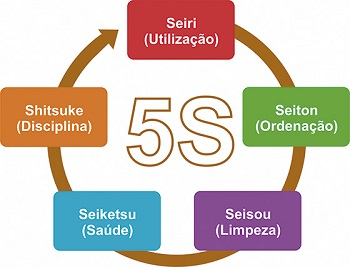
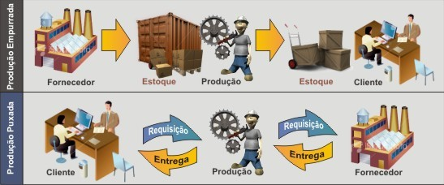

5S é um programa de gestão de qualidade empresarial desenvolvido no Japão que visa aperfeiçoar aspectos como organização, limpeza e padronização. Os princípios utilizados são semelhantes aos de crescimento humano profissional.
O Programa 5S normalmente é implementado como um plano estratégico para que alguns aspectos fundamentais da empresa comecem a apresentar melhorias rumo à qualidade total.
A junção no número “5” com a letra “S” vem de cinco palavras japonesas que começam com S:
Sua principal vantagem é a facilidade de provocar mudanças comportamentais em todos os setores das empresas.

O programa 5s pode ser implementado em qualquer tipo de empresa, órgãos públicos, escolas, associações e até na vida pessoal de cada um. Sua implementação leva a um aumento na produtividade, eficiência, segurança e motivação, além de ser aliado dos requisitos para uma certificação ISO.
5S – Seiri: Senso de utilização
O principal objetivo da primeira etapa do programa 5S é tornar o ambiente de trabalho mais útil e menos poluído, tanto visualmente como espacialmente. Para tal, deve-se classificar os objetos ou materiais de trabalho de acordo com a frequência com que são utilizados para, então, rearranjá-los ou colocá-los em uma área de descarte devidamente organizada. O resultado desse primeiro passo do programa 5s é um ambiente de trabalho estruturado e organizado de acordo com as principais necessidades de cada empresa.
5S – Seiton: Senso de organização
O segundo passo do programa 5s é uma continuação do primeiro. Seu conceito chave é a simplificação. A partir da organização espacial previamente feita, essa etapa visa dar aos objetos que são menos utilizados um local em que eles fiquem organizados e etiquetados. Assim, agilizam-se os processos e há maior economia de tempo.
5S – Seiso: Senso de limpeza
O terceiro item o processo 5S consiste na limpeza e investigação minuciosa do local de trabalho em busca de rotinas que geram sujeira ou imperfeições. Qualquer elemento que possa causar algum distúrbio ou desconforto (como mal cheiro, falhas na iluminação ou barulhos) deve ser consertado. O principal resultado é um ambiente que gera satisfação nos funcionários por trabalharem em um local limpo e arrumado, além de equipamentos com menos possibilidades de erros ou de quebra por conta da constante fiscalização.
5S – Seiktsu: Senso de padronização
O quarto conceito do programa 5S consiste na manutenção dos três iniciais, gerando melhorias constantes para o ambiente de trabalho. Nessa etapa, deve-se definir quem são os responsáveis pela continuidade das ações das etapas iniciais do 5s. Com um ambiente mais limpo, há grande chance de os funcionários também buscarem maior cuidado com o visual e com a saúde pessoal, garantindo ainda mais equilíbrio e bom desempenho no trabalho e contribuindo ainda mais para o andamento do processo rumo à qualidade total.
5S – Shitsuke: Senso de disciplina
Quando o quinto e último processo do programa 5s está em execução, quer dizer que o programa está em andamento perfeito. A disciplina, que pode ser considerada a chave do 5S, existe quando cada um exerce seu papel para a melhoria do ambiente de trabalho, do desempenho e da saúde pessoal, sem que ninguém o cobre por isso.
O Just in Time, que significa “momento certo”, é um sistema com objetivo de produzir a quantidade exata de um produto, de acordo com a demanda, de forma rápida e sem a necessidade da formação de estoques, fazendo com que o produto chegue a seu destino no tempo certo, por isso carrega o nome de Just in Time.
O Just in Time tem um grande impacto em uma cadeia produtiva, de forma a alocar apenas a matéria-prima na quantidade certa para determinado produto em um determinado tempo.
Todos os esforços e investimentos no sistema têm como objetivo reduzir ao máximo desperdícios e prejuízos, muito comuns em indústrias que ficam com excesso de produtos por falta de rotatividade.
A principal vantagem de trabalhar com esse sistema fica concentrada na agilidade do processo e na redução de custos de estoque, o que implica nos resultados de toda cadeia produtiva.
O fornecedor entrega as matérias-primas em pequenas quantidades, por isso, o fluxo contínuo de entrega torna o processo de desenvolvimento do produto mais rápido, também exigindo mais agilidade na entrega do produto final e consequentemente, otimizando o espaço de armazenagem.

A grande desvantagem do sistema é que esse processo não pode ser aplicado em indústrias com pouca previsibilidade em demanda e que passa por diversas oscilações. Existem empresas que necessariamente precisam de um estoque, e o conceito de Just in Time não se adéqua às necessidades desse tipo de negócio.
Outro ponto negativo do processo é que ele só funciona bem quando a empresa trabalha com poucos fornecedores e que tenham estabilidade no fornecimento de materiais.